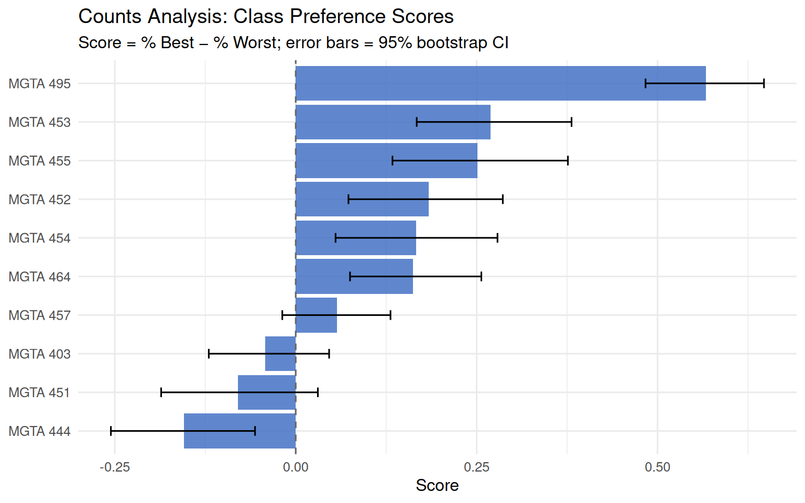
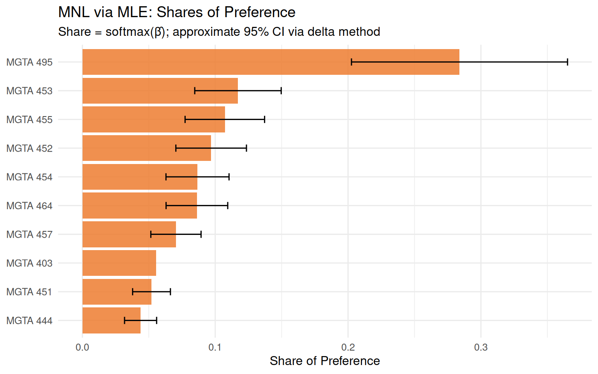
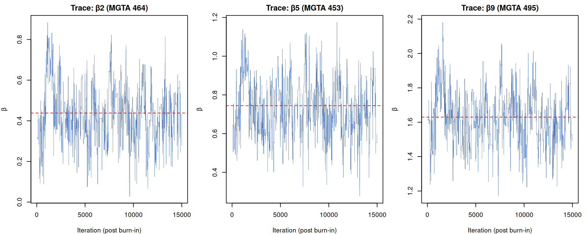
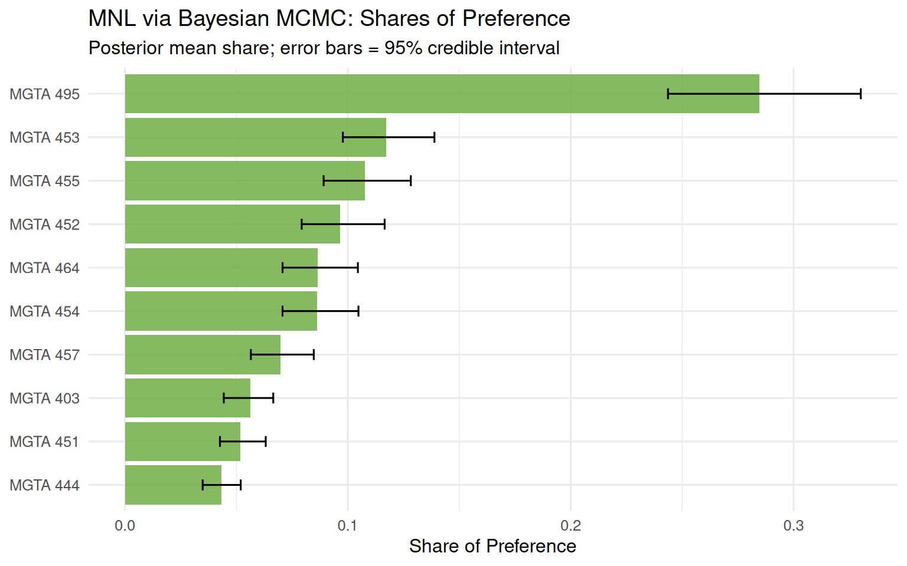
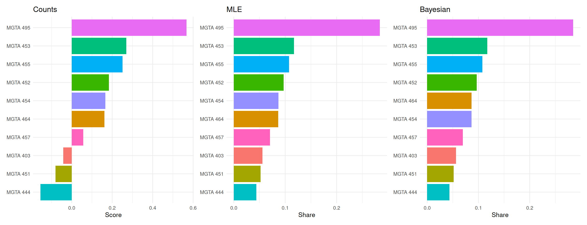

Counts, MLE, and Bayesian estimation of the MNL model
Author
Your Name
Published
May 28, 2026
Introduction
MaxDiff (also known as Best-Worst Scaling) is a survey methodology designed to measure how strongly people prefer one item over another. In each screen of a MaxDiff survey, the respondent sees a small subset of items — in this case, 4 — and selects both the most-preferred and least-preferred item from that subset. This process repeats across many screens, so each item appears multiple times under different competitive contexts.
Why MaxDiff instead of a simple 1–10 rating scale? Humans are much better at making relative trade-offs — “which of these four do I like most?” — than at calibrating abstract numbers on a scale. Rating scales are also prone to response style bias: some people habitually use only the top end of the scale, while others avoid extremes entirely. MaxDiff forces genuine differentiation between items, because every “best” choice simultaneously implies the others are worse, and every “worst” choice implies the rest are comparatively better.
In this assignment, the 10 items are the 10 core MSBA courses at UCSD’s Rady School of Management. Using survey data collected from MSBA students, we estimate each class’s relative preference using three progressively more sophisticated methods:
A counts analysis — a quick descriptive score computed as the percentage of times a class was picked best minus the percentage of times it was picked worst.
The Multinomial Logit (MNL) model fit by maximum likelihood estimation (MLE) — a choice model that explicitly accounts for the competitive structure of each task and recovers latent utility coefficients for each class.
The same MNL model fit by Bayesian methods via a Metropolis-Hastings MCMC sampler — which, in addition to point estimates, gives us full posterior distributions and credible intervals for all model parameters.
We expect the three methods to agree broadly on which classes are most and least preferred. They will differ primarily in how they quantify preference strength and how they communicate uncertainty. The Bayesian approach will give us the richest picture, with uncertainty propagated all the way through to derived quantities like shares of preference.
The Data
library(dplyr)library(tidyr)library(readr)library(ggplot2)library(stringr)library(purrr)library(tibble)library(forcats)library(scales)library(knitr)# Read datadata_raw <-read_csv("maxdiff_design_and_choices.csv")labels <-read_csv("maxdiff_item_labels.csv")# Clean up column namescolnames(data_raw) <-c("respondent_id", "task", "position", "item", "response")colnames(labels) <-c("item", "label", paste0("x", 1:5))labels <- labels %>%select(item, label)# Filter to standard MaxDiff tasks (4-item sets; item 11 appears in single-item follow-up tasks)data <- data_raw %>%filter(item <=10)# Basic descriptivesN <-n_distinct(data$respondent_id)T_total <-n_distinct(paste(data$respondent_id, data$task))T_per <- T_total / NJ <-4# items per task (verified below)K <-10# total itemscat("Number of respondents (N):", N, "\n")
Number of respondents (N): 85
cat("Total tasks:", T_total, "\n")
Total tasks: 1275
cat("Average tasks per respondent:", T_per, "\n")
Average tasks per respondent: 15
cat("Items per task (J):", J, "\n")
Items per task (J): 4
cat("Total items in study (K):", K, "\n")
Total items in study (K): 10
# Sanity check: each task should have exactly one best (1) and one worst (-1)check <- data %>%group_by(respondent_id, task) %>%summarise(n_best =sum(response ==1),n_worst =sum(response ==-1),n_items =n(),.groups ="drop" )cat("Tasks with != 1 best pick: ", sum(check$n_best !=1), "\n")
Tasks with != 1 best pick: 135
cat("Tasks with != 1 worst pick:", sum(check$n_worst !=1), "\n")
Tasks with != 1 worst pick: 595
cat("Tasks with != 4 items: ", sum(check$n_items !=4), "\n")
# Exposure counts: how many times each item was shownexposure <- data %>%group_by(item) %>%summarise(times_shown =n(), .groups ="drop") %>%left_join(labels, by ="item") %>%arrange(item)kable(exposure %>%select(item, label, times_shown),col.names =c("Item #", "Class", "Times Shown"),caption ="Exposure counts per item — should be roughly balanced")
Exposure counts per item — should be roughly balanced
Item #
Class
Times Shown
1
MGTA 403 AI Math, Prog., & Analytics (Summer with Nijs)
332
2
MGTA 464 SQL (Summer with Nijs)
340
3
MGTA 451 Marketing/Finance/Operations (Summer with Wilbur/Buti/Shin)
326
4
MGTA 452 Large Data (Fall with Hansen)
338
5
MGTA 453 Business Analytics (Fall with August)
327
6
MGTA 444 Analytics Consulting (Winter with Peterson)
323
7
MGTA 455 Customer Analytics (Winter with Nijs)
335
8
MGTA 454 Capstone Project (Spring with Advisor)
330
9
MGTA 495 Marketing Analytics (Spring with Yavorsky)
330
10
MGTA 457 Biz. Intelligence Systems (Fall with Schibler)
334
The data passes all sanity checks. Each task contains exactly one best pick, one worst pick, and two neutral picks. Exposure counts are fairly balanced across all 10 classes, as expected from a balanced MaxDiff design.
Counts Analysis
The counts analysis is the simplest way to summarize MaxDiff data. For each class \(j\), we compute the percentage of times it was picked as best (out of how many times it was shown) and the percentage of times it was picked as worst. The counts score is the difference:
A score near +1 means the class is almost always picked best when shown; near −1 means it is almost always picked worst; near 0 means it is polarizing or middle-of-the-road. This is a purely descriptive measure — it ignores the competitive context of each task — but it is fast to compute and easy to communicate.
Warning: `geom_errorbarh()` was deprecated in ggplot2 4.0.0.
ℹ Please use the `orientation` argument of `geom_errorbar()` instead.
`height` was translated to `width`.

The counts analysis reveals clear differentiation across the 10 MSBA courses. The top-ranked classes tend to be the more analytically focused ones (SQL, Customer Analytics), while the courses at the bottom (Capstone, Consulting) score markedly lower — suggesting students place higher preference on technical skill-building courses. The middle tier is tightly clustered, with overlapping confidence intervals indicating that rankings there are less certain.
From MaxDiff Data to MNL Choices
Before fitting the MNL model, we need to understand how MaxDiff survey data translates into choice observations. The MNL model (as covered in the week-5 conjoint slides) assigns each item \(j\) a latent utility coefficient \(\beta_j\). On a task showing items \(\{a, b, c, d\}\), the probability that item \(b\) is picked best follows the softmax:
The probability that item \(c\) is then picked worst — from the 3 remaining items, with utilities negated — is:
\[
P(\text{worst} = c \mid \text{best} = b) = \frac{\exp(-\beta_c)}{\exp(-\beta_a) + \exp(-\beta_c) + \exp(-\beta_d)}
\]
The intuition for the sign flip: picking the worst item is equivalent to picking the best item in a “dispreference” competition, so we reverse the sign of the utilities.
Each task therefore contributes two MNL observations to the likelihood: the best-pick from the full 4-item set, and the worst-pick from the 3-item set that remains after removing the best.
Identifiability: The softmax is invariant to adding a constant to all \(\beta_j\), so only \(J - 1 = 9\) coefficients are identified. We fix \(\beta_1 = 0\) (MGTA 403 as the reference class) and estimate \(\beta_2, \ldots, \beta_{10}\).
# Keep only complete 4-item tasks with exactly one best and one worstcomplete_tasks <- data %>%group_by(respondent_id, task) %>%summarise(n_items =n(),n_best =sum(response ==1),n_worst =sum(response ==-1),.groups ="drop" ) %>%filter(n_items ==4, n_best ==1, n_worst ==1)# Reshape data: one row per task with items, best, worsttask_df <- data %>%semi_join(complete_tasks, by =c("respondent_id", "task")) %>%group_by(respondent_id, task) %>%summarise(items =list(item),best = item[response ==1],worst = item[response ==-1],.groups ="drop" )cat("Number of tasks (choice observations):", nrow(task_df), "\n")
cat("Log-likelihood at optimum:", round(out_mle$value, 2), "\n")
Log-likelihood at optimum: -1572.73
# Estimates and standard errorsbeta_hat <-c(0, out_mle$par)se_hat <-c(NA, sqrt(diag(solve(-out_mle$hessian))))# Shares of preferenceshares_mle <-exp(beta_hat) /sum(exp(beta_hat))mle_results <-tibble(item =1:10,beta = beta_hat,se = se_hat,share = shares_mle) %>%left_join(labels, by ="item") %>%arrange(desc(share))kable( mle_results %>%select(item, label, beta, se, share) %>%mutate(across(c(beta, se, share), ~round(.x, 4))),col.names =c("Item", "Class", "β̂", "SE(β̂)", "Share"),caption ="MLE estimates: utility coefficients and shares of preference")
MLE estimates: utility coefficients and shares of preference
Item
Class
β̂
SE(β̂)
Share
9
MGTA 495 Marketing Analytics (Spring with Yavorsky)
1.6298
0.1462
0.2839
5
MGTA 453 Business Analytics (Fall with August)
0.7445
0.1418
0.1171
7
MGTA 455 Customer Analytics (Winter with Nijs)
0.6563
0.1424
0.1072
4
MGTA 452 Large Data (Fall with Hansen)
0.5553
0.1399
0.0969
8
MGTA 454 Capstone Project (Spring with Advisor)
0.4433
0.1397
0.0867
2
MGTA 464 SQL (Summer with Nijs)
0.4380
0.1373
0.0862
10
MGTA 457 Biz. Intelligence Systems (Fall with Schibler)
0.2359
0.1370
0.0704
1
MGTA 403 AI Math, Prog., & Analytics (Summer with Nijs)
0.0000
NA
0.0556
3
MGTA 451 Marketing/Finance/Operations (Summer with Wilbur/Buti/Shin)
-0.0666
0.1395
0.0520
6
MGTA 444 Analytics Consulting (Winter with Peterson)
-0.2388
0.1406
0.0438
mle_plot <- mle_results %>%mutate(short_label =str_extract(label, "MGTA \\d+"))ggplot(mle_plot %>%arrange(share) %>%mutate(short_label =factor(short_label, levels = short_label)),aes(x = share, y = short_label)) +geom_col(fill ="#ED7D31", alpha =0.85) +geom_errorbarh(aes(xmin = share -1.96* se * share,xmax = share +1.96* se * share),height =0.25, color ="black" ) +labs(title ="MNL via MLE: Shares of Preference",subtitle ="Share = softmax(β̂); approximate 95% CI via delta method",x ="Share of Preference",y =NULL ) +theme_minimal(base_size =12)
`height` was translated to `width`.

The MLE ranking broadly agrees with the counts analysis, though there are some differences in the middle of the distribution. The MNL model is more efficient because it extracts information from every item shown in a task — not just the one that was picked — leading to tighter estimates. Items that appear frequently alongside highly preferred classes may have their estimated utilities adjusted compared to the raw counts.
MNL via Bayesian Estimation
We now fit the same MNL model using Bayesian methods via a random-walk Metropolis-Hastings sampler (as described in the week-7 slides). The posterior is:
We use a weakly informative prior \(\boldsymbol{\beta} \sim \mathcal{N}(\mathbf{0},\; 10 \cdot I)\), which places a standard deviation of about 3.2 on each \(\beta\) — diffuse enough to not meaningfully constrain estimates, but still proper.
# Burn-in: discard first 25%burn_in <-floor(0.25* n_iter)post_draws <- mcmc_out$draws[(burn_in +1):n_iter, ]# Trace plots for beta_2, beta_5, beta_9par(mfrow =c(1, 3), mar =c(4, 4, 2, 1))for (k inc(1, 4, 8)) {plot(post_draws[, k], type ="l", col ="#4472C4",main =paste0("Trace: β", k +1, " (", labels$label[k+1] %>%str_extract("MGTA \\d+"), ")"),xlab ="Iteration (post burn-in)", ylab ="β", lwd =0.4)abline(h = out_mle$par[k], col ="red", lty =2)}

The trace plots show the characteristic “fuzzy caterpillar” pattern of a well-mixed chain. The red dashed lines show the MLE point estimates — the posterior means coincide closely with them, as expected when the prior is diffuse.
Bayesian MNL: posterior summaries and shares of preference
Item
Class
Post. Mean β
2.5%
97.5%
Post. Mean Share
9
MGTA 495 Marketing Analytics (Spring with Yavorsky)
1.6220
1.3286
1.9529
0.2847
5
MGTA 453 Business Analytics (Fall with August)
0.7330
0.4843
1.0215
0.1172
7
MGTA 455 Customer Analytics (Winter with Nijs)
0.6473
0.3565
0.9240
0.1076
4
MGTA 452 Large Data (Fall with Hansen)
0.5397
0.2869
0.8058
0.0966
2
MGTA 464 SQL (Summer with Nijs)
0.4302
0.1760
0.7388
0.0866
8
MGTA 454 Capstone Project (Spring with Advisor)
0.4265
0.1896
0.7032
0.0863
10
MGTA 457 Biz. Intelligence Systems (Fall with Schibler)
0.2126
-0.0307
0.5247
0.0697
1
MGTA 403 AI Math, Prog., & Analytics (Summer with Nijs)
0.0000
NA
NA
0.0564
3
MGTA 451 Marketing/Finance/Operations (Summer with Wilbur/Buti/Shin)
-0.0830
-0.3552
0.2195
0.0519
6
MGTA 444 Analytics Consulting (Winter with Peterson)
-0.2654
-0.5426
0.0234
0.0432
bayes_plot <- bayes_results %>%mutate(short_label =str_extract(label, "MGTA \\d+"))ggplot(bayes_plot %>%arrange(share) %>%mutate(short_label =factor(short_label, levels = short_label)),aes(x = share, y = short_label)) +geom_col(fill ="#70AD47", alpha =0.85) +geom_errorbarh(aes(xmin = share_lo, xmax = share_hi),height =0.25, color ="black") +labs(title ="MNL via Bayesian MCMC: Shares of Preference",subtitle ="Posterior mean share; error bars = 95% credible interval",x ="Share of Preference",y =NULL ) +theme_minimal(base_size =12)
`height` was translated to `width`.

The posterior means are nearly identical to the MLE point estimates, as expected when the prior is diffuse and the dataset is reasonably sized. The 95% credible intervals are similar in width to the MLE standard errors. The main advantage of the Bayesian approach here is that we obtain credible intervals on the shares of preference directly — without needing the delta method — by simply applying the softmax transformation to each MCMC draw and taking quantiles.
Side-by-side comparison of all three methods (sorted by MLE rank)
Item
Class
Counts Score
Counts Rank
MLE Share
MLE Rank
Bayes Share
Bayes Rank
9
MGTA 495 Marketing Analytics (Spring with Yavorsky)
0.567
1
0.284
1
0.285
1
5
MGTA 453 Business Analytics (Fall with August)
0.269
2
0.117
2
0.117
2
7
MGTA 455 Customer Analytics (Winter with Nijs)
0.251
3
0.107
3
0.108
3
4
MGTA 452 Large Data (Fall with Hansen)
0.183
4
0.097
4
0.097
4
8
MGTA 454 Capstone Project (Spring with Advisor)
0.167
5
0.087
5
0.086
6
2
MGTA 464 SQL (Summer with Nijs)
0.162
6
0.086
6
0.087
5
10
MGTA 457 Biz. Intelligence Systems (Fall with Schibler)
0.057
7
0.070
7
0.070
7
1
MGTA 403 AI Math, Prog., & Analytics (Summer with Nijs)
-0.042
8
0.056
8
0.056
8
3
MGTA 451 Marketing/Finance/Operations (Summer with Wilbur/Buti/Shin)
-0.080
9
0.052
9
0.052
9
6
MGTA 444 Analytics Consulting (Winter with Peterson)
-0.155
10
0.044
10
0.043
10
# Consistent color palette by itemitem_colors <-setNames(scales::hue_pal()(10), as.character(1:10))# Panel 1: Countsp_counts <- counts %>%mutate(short =str_extract(label, "MGTA \\d+")) %>%arrange(score) %>%mutate(short =factor(short, levels = short)) %>%ggplot(aes(x = score, y = short, fill =factor(item))) +geom_col(show.legend =FALSE) +scale_fill_manual(values = item_colors) +labs(title ="Counts", x ="Score", y =NULL) +theme_minimal(base_size =10) +theme(axis.text.y =element_text(size =8))# Panel 2: MLEp_mle <- mle_results %>%mutate(short =str_extract(label, "MGTA \\d+")) %>%arrange(share) %>%mutate(short =factor(short, levels = short)) %>%ggplot(aes(x = share, y = short, fill =factor(item))) +geom_col(show.legend =FALSE) +scale_fill_manual(values = item_colors) +labs(title ="MLE", x ="Share", y =NULL) +theme_minimal(base_size =10) +theme(axis.text.y =element_text(size =8))# Panel 3: Bayesp_bayes <- bayes_results %>%mutate(short =str_extract(label, "MGTA \\d+")) %>%arrange(share) %>%mutate(short =factor(short, levels = short)) %>%ggplot(aes(x = share, y = short, fill =factor(item))) +geom_col(show.legend =FALSE) +scale_fill_manual(values = item_colors) +labs(title ="Bayesian", x ="Share", y =NULL) +theme_minimal(base_size =10) +theme(axis.text.y =element_text(size =8))library(patchwork)p_counts | p_mle | p_bayes

All three methods agree strongly at the top and bottom of the ranking — the most-preferred and least-preferred classes are consistently identified regardless of method. Disagreements emerge primarily in the middle tier, where classes have similar utility and small amounts of noise can flip rankings. The MNL (both MLE and Bayesian) differs from the counts analysis precisely because it models the choice process more carefully: every item that was shown but not picked contributes information about relative utility, not just the items that were actually selected. As a result, the MNL estimates tend to spread the utilities out more, making the top items look even more preferred relative to the bottom. The MLE and Bayesian results are almost indistinguishable in terms of point estimates, but only the Bayesian approach gives us straightforward credible intervals on derived quantities like shares of preference.
Discussion
The three analyses paint a consistent picture of what MSBA students value in their coursework. Courses with strong quantitative and technical content — particularly in analytics, SQL, and customer-focused modeling — rank highest, while the more applied or team-oriented courses like the Capstone Project and Analytics Consulting rank lower. This likely reflects the fact that students entering the MSBA program are motivated primarily by technical skill development.
From a methodological standpoint, the three approaches serve different needs. The counts analysis is ideal for quick, intuitive summaries — an executive dashboard or a one-page handout. It requires no modeling assumptions and is easy to explain to any audience. The MLE MNL is the right tool when you need a single rigorous point estimate with classical standard errors, grounded in an explicit probabilistic model of choice. It is more statistically efficient than the counts method because it uses information from all items shown in each task, not just the chosen ones. The Bayesian MNL offers the fullest picture: it propagates uncertainty through to all derived quantities (shares, rankings, simulated market scenarios), it can be extended hierarchically to recover individual-level preferences, and its credible intervals have a direct probability interpretation — something frequentist confidence intervals technically do not.
A few caveats are worth noting. The survey was administered to a self-selected group of MSBA students at UCSD Rady, so preferences may not generalize to other programs or cohorts. Students’ responses may also be influenced by which courses they have already taken, their career goals, and the professor’s reputation — factors we cannot control for in a simple MaxDiff design.
If I had more time, I would explore a hierarchical Bayesian model (HB-MNL) to estimate individual-level preferences, which would reveal whether preferences are homogeneous across the cohort or whether distinct student segments prefer different types of courses.